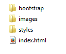

CSS 3 - Bootstrap
 Le framework Bootstrap ne fera pas partie de l'évaluation
Le framework Bootstrap ne fera pas partie de l'évaluation
Introduction
Grâce aux Media Queries, nous pouvons réaliser des sites Responsive .
Cependant la mise en place de ces Media Queries est lourde à effectuer pour le développeur. Lors de la création d'un site Web,
vous avez sans doute également remarqué que la tâche la plus consommatrice est le CSS. En effet, le positionnement n'est pas aisé et les tests sont obligatoires
pour s'assurer du résultat final et ceci sur plusieurs navigateurs.
C'est pourquoi différents framework CSS ont vu le jour dans le but de diminuer la charge de cette tâche pour le développeur.
 Un framework est un terme courant en informatique.
Un framework est un terme courant en informatique.
Ce mot désigne un ensemble d'outils et de composants logiciels structurés.
On parle de bibliothèque logicielle.
Ces frameworks ont pour but de faciliter le travail du développeur.
Bootstrap
Bootstrap est un donc un framework CSS. Il a été conçu par les développeurs de Twitter et est rapidement devenu le
framework CSS le plus utilisé.
Voici les éléments principaux qui composent Bootstrap :
- Mise en page(positionnement) via une grille (12 colonnes)
- Rendre automatiquement votre site Responsive
- Garantir la compatibilité de votre site sur plusieurs navigateurs
- Fournir un ensemble de classes CSS pour faciliter et embellir votre site
Installation et préparation de Bootstrap
Pour installer Bootstrap, il faut au préalable le télécharger sur son site Get Bootstrap .
Ensuite il suffit de décompresser l'archive dans le répertoire de votre site.
Pour utiliser Bootstrap, il faudra se plier à une structure de base HTML fournie par Bootstrap. Vous avez la possibilité de récupérer cette structure de base
directement sur le site de bootstrap à cet endroit.
Vous devrez sans doute modifier les liens vers les fichiers CSS de ce modèle de base. En effet, l'architecture de votre site sera la suivante :

Le modèle de base (index.html) contient des liens vers des feuilles de styles bootstrap qu'il conviendra de faire pointer au bon endroit (bootstrap/css).
Remarquez également que Bootstrap fournit des fichiers pour la production( Ex: bootstrap.min.css) et pour le développement(Ex: bootstrap.css). Ces fichiers sont identiques,
mise à part, que le fichier de production a une taille plus petite et est donc plus rapide à charger. C'est donc celui-ci que l'on retrouve dans le modèle de base.
Si le développeur veut jeter un coup d'oeil à ce fichier, il dispose de la version de développement qui est nettemment plus lisible pour un être humain.
Bootstrap peut également être utilisé via un CDN (Content Delivery Network).
Dans ce cas vous ne devez pas télécharger le framework Bootstrap, vous utilisez celui présent dans le CDN.
Attention l'utilisation de Bootstrap via un CDN impose d'avoir un accès à Internet.
Ce n'est pas toujours le cas !
Par exemple lorsque vous présenterez votre projet Web durant la session de juin, vous n'aurez pas d'accès à Internet
ce qui rend les CDN inutilisables.
Positionnement avec Bootstrap
Bootstrap utilise un système de grille qu'il faudra utiliser pour positionner nos différents éléments HTML.
Cette grille est constituée de lignes (row) et de colonnes (col) sachant qu'il y a au maximum 12 colonnes.
Exemple : je veux créer un site comportant une zone à gauche(menu) et une zone centrale
<div class="container-fluid">
<section class="row">
<article class="col-lg-4"> ... </article>
<article class="col-lg-8"> ... </article>
</section>
</div>
Analysons cet exemple.
Pour pouvoir utiliser la grille, Bootstrap demande que l'entièreté du site soit encapsulé dans une division associée
à la classe container-fluid. Ceci permet à Bootstrap de rendre votre site Responsive.
Ensuite nos différentes zones peuvent se placer sur la grille. On définit ici une seule ligne qui est composée d'une zone comportant les 4 premières colonnes de
la grille, suivit d'une zone(tjs sur la même ligne) comprenant les 8 dernières colonnes.
Vous le voyez le positionnement a été grandement facilité. Bien sûr on peut définir plusieurs lignes (row).
On peut donc avoir une ligne comptant 12 colonnes (header) suivit par une ligne comptant une zone de 4 colonnes et une zone de 8 colonnes.
Remarquez également que Bootstrap utilise des classes, le choix des éléments HTML article et section
dans l'exemple précédent appartient au développeur.
N'oubliez donc pas les bonnes habitudes apprises avant Bootstrap notamment sur l'utilisation des balises sémantiques.
Dans l'exemple, ces sont des classes col-lg-* qui ont été utilisées. Sachez qu'il existe également des versions col-xs-*, col-sm-*,
col-md-* de ces classes. xs, sm, md et lg définissent en fait le type d'écran pour lequel le site a été conçu.
La taille des colonnes étant évidemment différente sur un smartphone(xs), sur une tablette (sm), sur un écran de bureau (md) et sur un écran large.
Les classes Bootstrap
Bootstrap propose différentes classes permettant d'embellir votre site ou de l'enrichir avec des composants prêts à l'emploi. Evidemment pour pouvoir les utiliser,
il faut connaître ces classes et savoir comment les utiliser. Le site de de W3School propose justement
la liste des composants bootstrap ainsi qu'un exemple l'illustrant.
Les Glyphicons
Bootstrap propose différentes icônes libres appelées Glyphicons et qui s'utilise très facilement.
Voir ici.